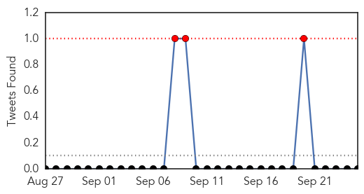
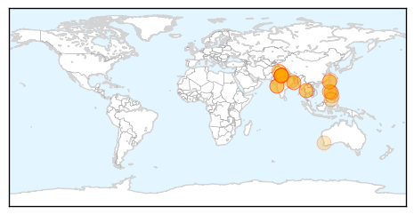
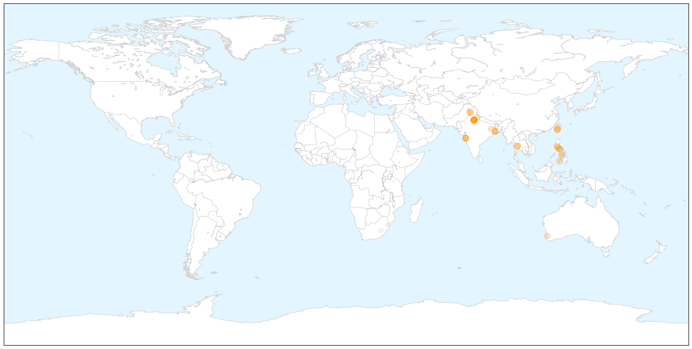

Dengue Fever
30-Day Web Trend
15 alerts, 1 warnings

30-Day Twitter Trend
3 alerts, 0 warnings

Article Locations

X

Article Confidences

Top Articles:
- 0.997
- Dengue fever cases going up in Cavite
- 0.996
- Dengue surveillance poor in India
- 0.993
- Health dept collects 53 fresh samples
- 0.988
- Dengue: 4 more test positive in Jammu, total cases 17
- 0.988
- Dengue ails 23,000
- 0.985
- Slow & sloppy civic response to dengue
- 0.982
- Boy Dies Of Dengue In Kolkata
- 0.974
- Nearly 250 cases of Dengue in last two months, most from Kolkata; KMC sets up 16 health camps
- 0.971
- Taiwan suffers deadliest-ever dengue outbreak, with record high of 42 people dead, news, Health News, AsiaOne YourHealth
- 0.970
- Dengue toll rises in Taiwan
- 0.970
- Dengue claims more lives
- 0.970
- Taiwan sees dengue record smashed, more than 16,000 cases reported in 2015
- 0.961
- Dengue: 4 more test positive in Jammu, total cases 17
- 0.958
- Nadda claims adequate arrangements in place to tackle dengue cases
- 0.956
- Dengue challenges India's health system
- 0.920
- Number of dengue fever cases ...｜Society｜WCT
- 0.907
- Philstar Mobile
- 0.905
- Amid Delhi's Dengue Outbreak, How Medical Students Are Helping Out
- 0.889
- Coal town army steps up sting fight
- 0.867
- Dengue victims to get ample blood supply –Red Cross
- 0.863
- Bollywood studios breeding grounds for dengue: BMC
- 0.837
- Zamboanga Today Online, the most read newspaper in Zamboanga City
- 0.832
- There will be blood for dengue victims
- 0.821
- Dengue menace in Delhi--Municipal corporation blames the lack of funds for their failure
- 0.755
- YMCA Faridabad authorities wake up to dengue menace
- 0.751
- Health minister Kim Hames launches Mandurah mosquito campaign
- 0.736
- Untitled Article
- 0.713
- PRC assures there’s enough blood for dengue victims
- 0.641
- Delhi health minister visits hospitals to check dengue arrangements
- 0.630
- Anil Kapoor, Jeetendra, Juhi Chawla face fine for hosting breeding spots
- 0.607
- Gordon: There’s enough blood for dengue victims
- 0.562
- Mumbai: Family goes on rampage, beats up doctors after infant dies of dengue
Top Tweets:
-
No tweets found for Sep 25, 2015